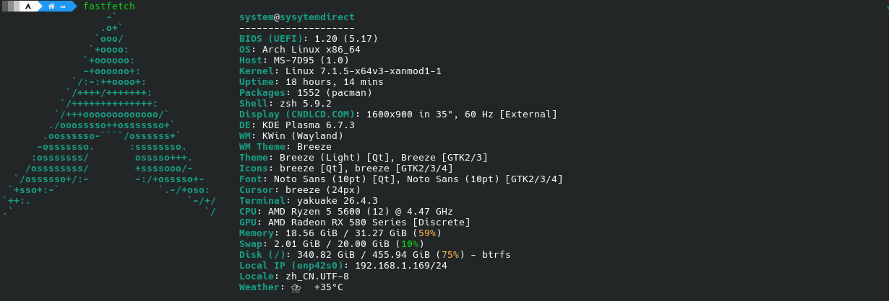

Hi, I'm sysytemdirect,a high school student.
I don't have much free time to write my blog, but I will try to update it as often as possible. I am interested in Linux and hardware, and I hope to share my thoughts and experiences with you through this blog.
I'm also a Minecraft player like explore update suppression and redstone machanics.If you'd like to play with me, feel free to contact me!
You can reach me at sysytemdirect@outlook.com
Or you can contact me on QQ: 27400889507
Github: click here
My Download server: click here

I also have a Friendlyelect nanopc T4,It is a powerful mini server,I use it to run nginx and frps
online players: loading...
click here to go to my blog: My Blog
You can find the source code for this website on GitHub.